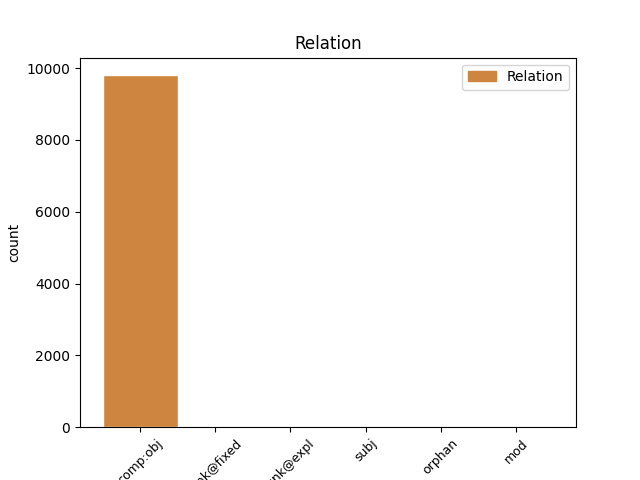
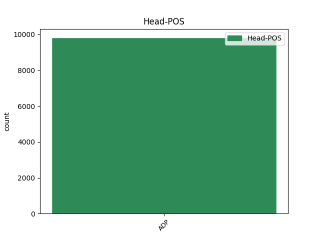
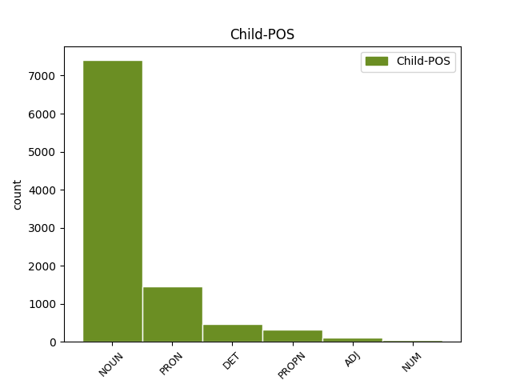

Distribution of features within this leaf



Agreement Rules sorted by frequency.
- When the dependent token is the direct object complements(comp:obj) of the head token, and the head token is ADP and the dependent token is NOUN.
1 A _ _ _ _ 0 _ _ _
2 dnes _ _ _ _ 0 _ _ _
3 jsem _ _ _ _ 0 _ _ _
4 na na ADP RR--4---------- AdpType=Prep|Case=Acc 0 _ _ _
5 tvá _ _ _ _ 0 _ _ _
6 bedra bedra NOUN NNNP4-----A---- Case=Acc|Gender=Neut|Number=Plur|Polarity=Pos 4 comp:obj _ _
7 přidal _ _ _ _ 0 _ _ _
8 ještě _ _ _ _ 0 _ _ _
9 další _ _ _ _ 0 _ _ _
10 zátěž _ _ _ _ 0 _ _ _
11 . _ _ _ _ 0 _ _ _
1 Slyšel _ _ _ _ 0 _ _ _
2 jsem _ _ _ _ 0 _ _ _
3 tak _ _ _ _ 0 _ _ _
4 uvnitř _ _ _ _ 0 _ _ _
5 jeho _ _ _ _ 0 _ _ _
6 ženu _ _ _ _ 0 _ _ _
7 , _ _ _ _ 0 _ _ _
8 která _ _ _ _ 0 _ _ _
9 vevnitř _ _ _ _ 0 _ _ _
10 poklízela _ _ _ _ 0 _ _ _
11 , _ _ _ _ 0 _ _ _
12 jak _ _ _ _ 0 _ _ _
13 na na ADP RR--4---------- AdpType=Prep|Case=Acc 0 _ _ _
14 něj on PRON P5MS4--3------- Animacy=Anim|Case=Acc|Gender=Masc|Number=Sing|Person=3|PrepCase=Pre|PronType=Prs 13 comp:obj _ _
15 zavolala _ _ _ _ 0 _ _ _
16 nějakou _ _ _ _ 0 _ _ _
17 částku _ _ _ _ 0 _ _ _
18 . _ _ _ _ 0 _ _ _
1 Užívej _ _ _ _ 0 _ _ _
2 , _ _ _ _ 0 _ _ _
3 člověče _ _ _ _ 0 _ _ _
4 , _ _ _ _ 0 _ _ _
5 svého _ _ _ _ 0 _ _ _
6 života _ _ _ _ 0 _ _ _
7 a _ _ _ _ 0 _ _ _
8 dbej _ _ _ _ 0 _ _ _
9 na na ADP RR--4---------- AdpType=Prep|Case=Acc 0 _ _ _
10 to ten DET PDNS4---------- Case=Acc|Gender=Neut|Number=Sing|PronType=Dem 9 comp:obj _ SpaceAfter=No
11 , _ _ _ _ 0 _ _ _
12 aby _ _ _ _ 0 _ _ _
13 by _ _ _ _ 0 _ _ _
14 jsi _ _ _ _ 0 _ _ _
15 si _ _ _ _ 0 _ _ _
16 byl _ _ _ _ 0 _ _ _
17 vědom _ _ _ _ 0 _ _ _
18 jeho _ _ _ _ 0 _ _ _
19 ceny _ _ _ _ 0 _ _ _
20 . _ _ _ _ 0 _ _ _
21 " _ _ _ _ 0 _ _ _
1 Cadik _ _ _ _ 0 _ _ _
2 rabi _ _ _ _ 0 _ _ _
3 Elimelech _ _ _ _ 0 _ _ _
4 z z ADP RR--2---------- AdpType=Prep|Case=Gen 0 _ _ _
5 Lyžeňska Lyžeňsko PROPN NNNS2-----A---- Case=Gen|Gender=Neut|Number=Sing|Polarity=Pos 4 comp:obj _ _
6 jednou _ _ _ _ 0 _ _ _
7 řekl _ _ _ _ 0 _ _ _
8 svým _ _ _ _ 0 _ _ _
9 žákům _ _ _ _ 0 _ _ _
10 : _ _ _ _ 0 _ _ _
1 Tak _ _ _ _ 0 _ _ _
2 vyzkoušel _ _ _ _ 0 _ _ _
3 jeden _ _ _ _ 0 _ _ _
4 kříž _ _ _ _ 0 _ _ _
5 po po ADP RR--6---------- AdpType=Prep|Case=Loc 0 _ _ _
6 druhém druhý ADJ CrIS6---------- Animacy=Inan|Case=Loc|Gender=Masc|Number=Sing|NumType=Ord 5 comp:obj _ SpaceAfter=No
7 , _ _ _ _ 0 _ _ _
8 ale _ _ _ _ 0 _ _ _
9 vždycky _ _ _ _ 0 _ _ _
10 se _ _ _ _ 0 _ _ _
11 objevily _ _ _ _ 0 _ _ _
12 nějaké _ _ _ _ 0 _ _ _
13 nepříjemnosti _ _ _ _ 0 _ _ _
14 . _ _ _ _ 0 _ _ _
1 " _ _ _ _ 0 _ _ _
2 Za za ADP RR--4---------- AdpType=Prep|Case=Acc 0 _ _ _
3 dva dva NUM ClIP4---------- Animacy=Inan|Case=Acc|Gender=Masc|Number=Plur|NumForm=Word|NumType=Card|NumValue=1,2,3 2 comp:obj _ SpaceAfter=No
4 , _ _ _ _ 0 _ _ _
5 za _ _ _ _ 0 _ _ _
6 tři _ _ _ _ 0 _ _ _
7 týdny _ _ _ _ 0 _ _ _
8 . _ _ _ _ 0 _ _ _
9 " _ _ _ _ 0 _ _ _
1 Také _ _ _ _ 0 _ _ _
2 v v ADP RR--6---------- AdpType=Prep|Case=Loc 0 _ _ _
3 zájmu zájem NOUN NNIS6-----A---- Animacy=Inan|Case=Loc|Gender=Masc|Number=Sing|Polarity=Pos 2 unk@fixed _ _
4 své _ _ _ _ 0 _ _ _
5 rodiny _ _ _ _ 0 _ _ _
6 se _ _ _ _ 0 _ _ _
7 budu _ _ _ _ 0 _ _ _
8 muset _ _ _ _ 0 _ _ _
9 novému _ _ _ _ 0 _ _ _
10 úkolu _ _ _ _ 0 _ _ _
11 věnovat _ _ _ _ 0 _ _ _
12 zcela _ _ _ _ 0 _ _ _
13 a _ _ _ _ 0 _ _ _
14 naplno _ _ _ _ 0 _ _ _
15 . _ _ _ _ 0 _ _ _
1 Spousta _ _ _ _ 0 _ _ _
2 umělých _ _ _ _ 0 _ _ _
3 exotických _ _ _ _ 0 _ _ _
4 květin _ _ _ _ 0 _ _ _
5 a _ _ _ _ 0 _ _ _
6 tropických _ _ _ _ 0 _ _ _
7 palem _ _ _ _ 0 _ _ _
8 v v ADP RR--6---------- AdpType=Prep|Case=Loc 0 _ _ _
9 ozdobných _ _ _ _ 0 _ _ _
10 květináčích květináč NOUN NNIP6-----A---- Animacy=Inan|Case=Loc|Gender=Masc|Number=Plur|Polarity=Pos 8 mod _ _
11 působí _ _ _ _ 0 _ _ _
12 příznivým _ _ _ _ 0 _ _ _
13 dojmem _ _ _ _ 0 _ _ _
14 . _ _ _ _ 0 _ _ _
1 Papírnictví _ _ _ _ 0 _ _ _
2 - _ _ _ _ 0 _ _ _
3 s _ _ _ _ 0 _ _ _
4 plnicími _ _ _ _ 0 _ _ _
5 pery _ _ _ _ 0 _ _ _
6 , _ _ _ _ 0 _ _ _
7 tužkami _ _ _ _ 0 _ _ _
8 a _ _ _ _ 0 _ _ _
9 barvičkami _ _ _ _ 0 _ _ _
10 , _ _ _ _ 0 _ _ _
11 kalendáři _ _ _ _ 0 _ _ _
12 , _ _ _ _ 0 _ _ _
13 vystřihovánkami _ _ _ _ 0 _ _ _
14 - _ _ _ _ 0 _ _ _
15 a _ _ _ _ 0 _ _ _
16 vedle vedle ADP RR--2---------- AdpType=Prep|Case=Gen 0 _ _ _
17 kuchyňské _ _ _ _ 0 _ _ _
18 potřeby potřeba NOUN NNFS2-----A---- Case=Gen|Gender=Fem|Number=Sing|Polarity=Pos 16 orphan _ _
19 a _ _ _ _ 0 _ _ _
20 elektro _ _ _ _ 0 _ _ _
21 s _ _ _ _ 0 _ _ _
22 novými _ _ _ _ 0 _ _ _
23 magnetofony _ _ _ _ 0 _ _ _
24 , _ _ _ _ 0 _ _ _
25 grily _ _ _ _ 0 _ _ _
26 a _ _ _ _ 0 _ _ _
27 nádobím _ _ _ _ 0 _ _ _
28 . _ _ _ _ 0 _ _ _
Disagree Examples:
1 Přeložte _ _ _ _ 0 _ _ _
2 list _ _ _ _ 0 _ _ _
3 papíru _ _ _ _ 0 _ _ _
4 , _ _ _ _ 0 _ _ _
5 přeložte _ _ _ _ 0 _ _ _
6 jej _ _ _ _ 0 _ _ _
7 znovu _ _ _ _ 0 _ _ _
8 a _ _ _ _ 0 _ _ _
9 znovu _ _ _ _ 0 _ _ _
10 , _ _ _ _ 0 _ _ _
11 pak _ _ _ _ 0 _ _ _
12 jej _ _ _ _ 0 _ _ _
13 roztrhejte _ _ _ _ 0 _ _ _
14 podle _ _ _ _ 0 _ _ _
15 ohybu _ _ _ _ 0 _ _ _
16 papíru _ _ _ _ 0 _ _ _
17 na na ADP RR--4---------- AdpType=Prep|Case=Acc 0 _ _ _
18 šestnáct _ _ _ _ 0 _ _ _
19 dílků dílek NOUN NNIP2-----A---- Animacy=Inan|Case=Gen|Gender=Masc|Number=Plur|Polarity=Pos 17 comp:obj _ SpaceAfter=No
20 . _ _ _ _ 0 _ _ _
1 Od _ _ _ _ 0 _ _ _
2 té _ _ _ _ 0 _ _ _
3 doby _ _ _ _ 0 _ _ _
4 jsem _ _ _ _ 0 _ _ _
5 na na ADP RR--4---------- AdpType=Prep|Case=Acc 0 _ _ _
6 Mont _ _ _ _ 0 _ _ _
7 Saint _ _ _ _ 0 _ _ _
8 Michel Michel PROPN NNMS1-----A---- Animacy=Anim|Case=Nom|Gender=Masc|NameType=Giv|Number=Sing|Polarity=Pos 5 comp:obj _ _
9 nebyl _ _ _ _ 0 _ _ _
10 , _ _ _ _ 0 _ _ _
11 nesnesl _ _ _ _ 0 _ _ _
12 bych _ _ _ _ 0 _ _ _
13 zase _ _ _ _ 0 _ _ _
14 pohled _ _ _ _ 0 _ _ _
15 na _ _ _ _ 0 _ _ _
16 to _ _ _ _ 0 _ _ _
17 místo _ _ _ _ 0 _ _ _
18 , _ _ _ _ 0 _ _ _
19 které _ _ _ _ 0 _ _ _
20 jsem _ _ _ _ 0 _ _ _
21 miloval _ _ _ _ 0 _ _ _
22 a _ _ _ _ 0 _ _ _
23 kde _ _ _ _ 0 _ _ _
24 se _ _ _ _ 0 _ _ _
25 tohle _ _ _ _ 0 _ _ _
26 stalo _ _ _ _ 0 _ _ _
27 . _ _ _ _ 0 _ _ _
1 Byla _ _ _ _ 0 _ _ _
2 to _ _ _ _ 0 _ _ _
3 vlastně _ _ _ _ 0 _ _ _
4 hra _ _ _ _ 0 _ _ _
5 , _ _ _ _ 0 _ _ _
6 smrtelně _ _ _ _ 0 _ _ _
7 vážná _ _ _ _ 0 _ _ _
8 HRA _ _ _ _ 0 _ _ _
9 NA na ADP RR--4---------- AdpType=Prep|Case=Acc 0 _ _ _
10 ČTRNÁCT _ _ _ _ 0 _ _ _
11 DNÍ den NOUN NNIP2-----A---1 Animacy=Inan|Case=Gen|Gender=Masc|Number=Plur|Polarity=Pos 9 comp:obj _ SpaceAfter=No
12 , _ _ _ _ 0 _ _ _
13 kdy _ _ _ _ 0 _ _ _
14 jsem _ _ _ _ 0 _ _ _
15 se _ _ _ _ 0 _ _ _
16 díval _ _ _ _ 0 _ _ _
17 na _ _ _ _ 0 _ _ _
18 svůj _ _ _ _ 0 _ _ _
19 život _ _ _ _ 0 _ _ _
20 z _ _ _ _ 0 _ _ _
21 druhého _ _ _ _ 0 _ _ _
22 břehu _ _ _ _ 0 _ _ _
23 a _ _ _ _ 0 _ _ _
24 viděl _ _ _ _ 0 _ _ _
25 vše _ _ _ _ 0 _ _ _
26 v _ _ _ _ 0 _ _ _
27 obrácené _ _ _ _ 0 _ _ _
28 perspektivě _ _ _ _ 0 _ _ _
29 . _ _ _ _ 0 _ _ _
1 Stačilo _ _ _ _ 0 _ _ _
2 o o ADP RR--4---------- AdpType=Prep|Case=Acc 0 _ _ _
3 pár _ _ _ _ 0 _ _ _
4 psaníček psaníčko NOUN NNNP2-----A---- Case=Gen|Gender=Neut|Number=Plur|Polarity=Pos 2 comp:obj _ _
5 méně _ _ _ _ 0 _ _ _
6 . _ _ _ _ 0 _ _ _
1 Za za ADP RR--4---------- AdpType=Prep|Case=Acc 0 _ _ _
2 pár _ _ _ _ 0 _ _ _
3 dní den NOUN NNIP2-----A---1 Animacy=Inan|Case=Gen|Gender=Masc|Number=Plur|Polarity=Pos 1 comp:obj _ _
4 jsem _ _ _ _ 0 _ _ _
5 opět _ _ _ _ 0 _ _ _
6 přijel _ _ _ _ 0 _ _ _
7 na _ _ _ _ 0 _ _ _
8 návštěvu _ _ _ _ 0 _ _ _
9 . _ _ _ _ 0 _ _ _